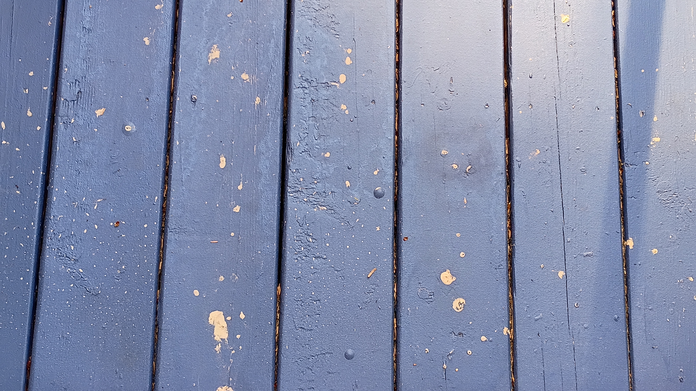

ope...a life / yard.1
evening blow off the ocean.
morning fog.
coast guard flyby.
so. much. pollen.

Hummingbird friend playing in the spray while I water the yard. (Hard to see our little friend, look for a quick darting movmement in the center of the video...they blend in with the spray very well.)